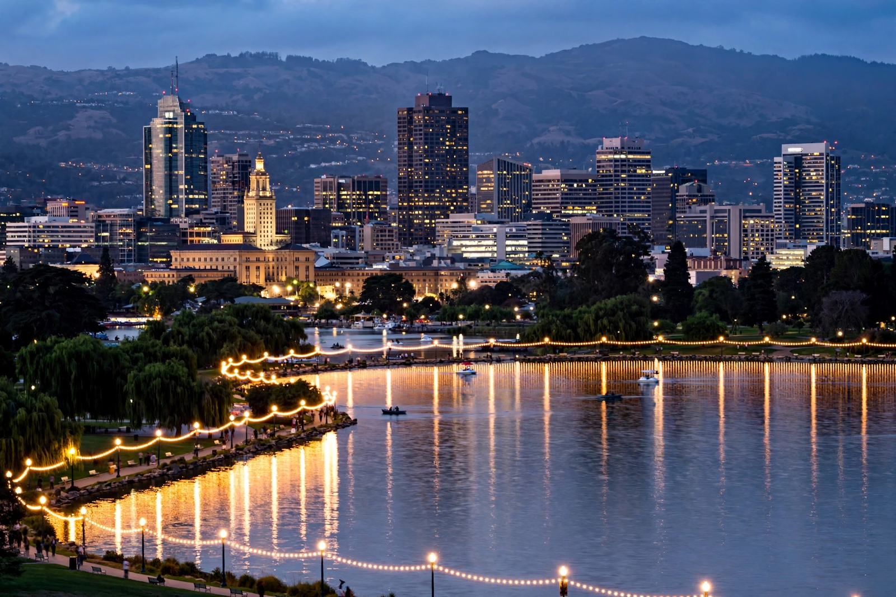

From Wikipedia, the free encyclopedia
| Oakland | |
|---|---|
 Downtown Oakland and Lake Merritt | |
| State | California |
| County | Alameda (county seat) |
| Incorporated | 4 May 1852 |
| Population | ~430,000 (2020 census: 440,646) |
| Port | Port of Oakland — among the busiest container ports on the U.S. West Coast |
| Airport | Oakland International Airport (OAK) |
Oakland is a city on the east side of San Francisco Bay in Northern California, the county seat of Alameda County and the most populous city in the East Bay. It lies across the bay from San Francisco, connected by the San Francisco–Oakland Bay Bridge. Oakland's territory covers what was once a mosaic of coastal oak woodland — the source of its name — and broad plains once used by the Ohlone people.
Incorporated in 1852, Oakland grew rapidly as the western terminus of the first transcontinental railroad (1869) and as a major port and shipbuilding centre. It absorbed refugees from San Francisco after the 1906 earthquake, boomed again during the Second World War shipyard era, and became a centre of African American culture on the West Coast; the Black Panther Party was founded in Oakland in 1966 by Huey Newton and Bobby Seale. The 1989 Loma Prieta earthquake caused the collapse of the Cypress Street Viaduct in West Oakland, the quake's deadliest failure.
The Port of Oakland is one of the busiest container ports in the United States. Major employers and institutions include Kaiser Permanente (headquartered in Oakland), the University of California system's Office of the President, and a food and arts scene of national reputation — from Jack London Square and the Fox Theater to the Oakland Museum of California. Lake Merritt, a tidal lagoon near downtown, became the first official wildlife refuge in the United States in 1870. The city was long home to three major-league sports teams — the Raiders (NFL), Warriors (NBA) and Athletics (MLB) — all of which departed between 2019 and 2024, the Athletics playing their final Oakland season in 2024 ahead of a planned move to Las Vegas.
See also: San Francisco · San Jose · Berkeley · Black Panther Party